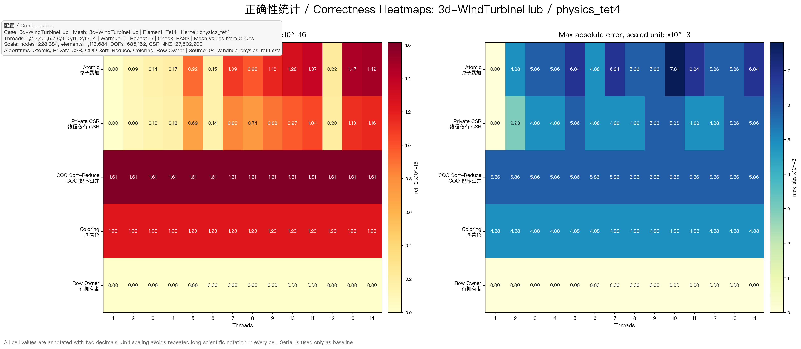
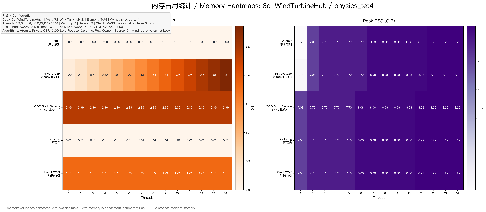
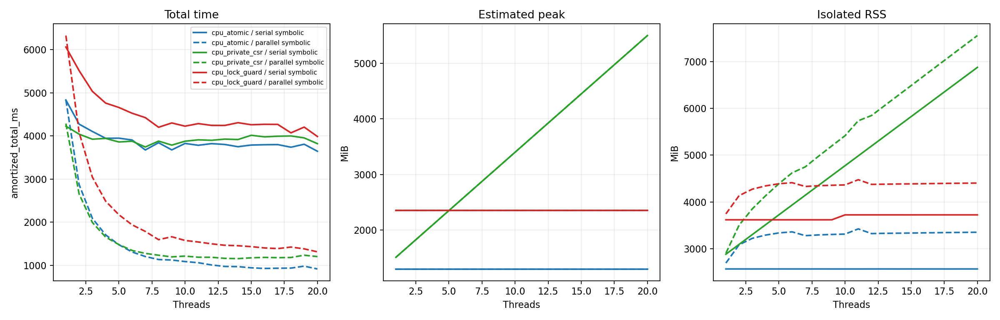
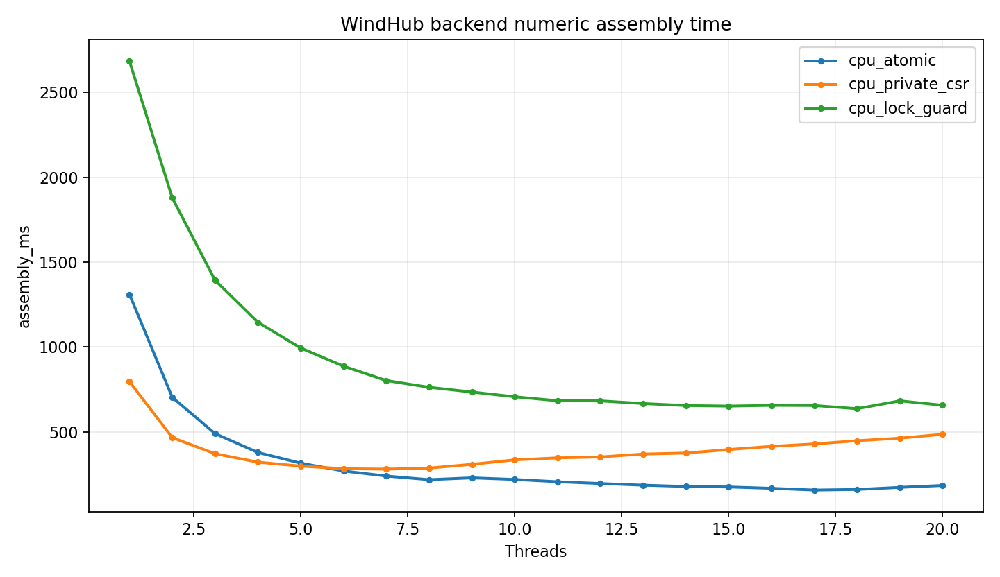
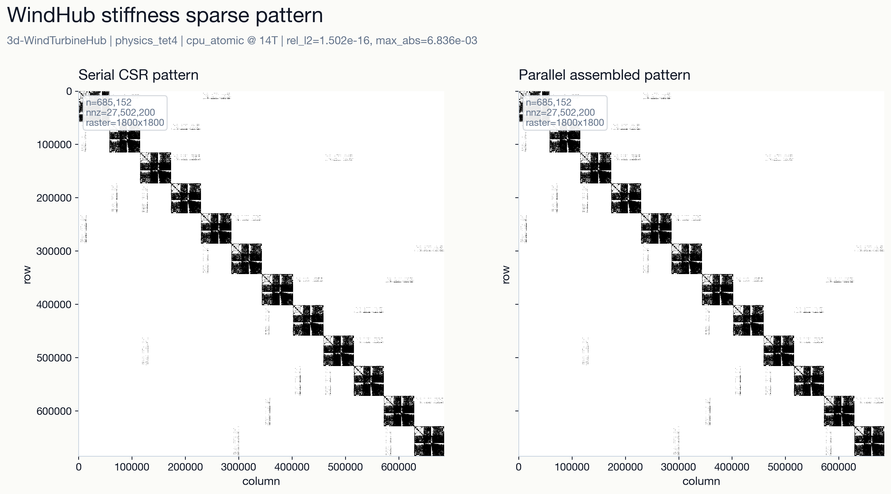
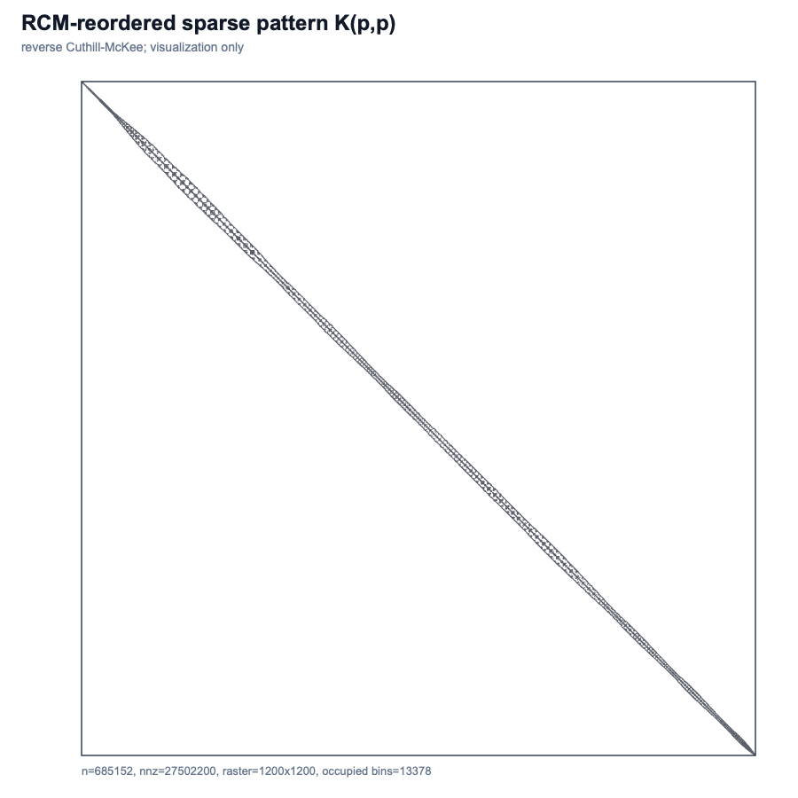

项目从 GPU 探索切到 CPU 多线程主线
早期已有 GPU 并行组装探索。4 月汇报明确把工作重心转为 CPU 多线程：目标不是单个算法秀速度，而是在统一框架下比较多种 CPU 组装策略。
这份材料假设你第一次听到这个项目：先用有限元计算里的“刚度矩阵组装”讲清楚问题，再详细说明 2026 年 4 月汇报之后新增的实现、实验、结论和仍需补强的验证闭环。
有限元法（finite element method，FEM）会把一个连续结构切成很多小单元。每个小单元都能算出自己的局部刚度矩阵 Ke，表示这个小块在受力后有多“硬”。
工程求解前，需要把所有小单元的局部贡献加到同一个整体刚度矩阵（global stiffness matrix）里。这个动作叫组装（assembly）。它看起来像“加法”，但在百万级单元上会变成一个很现实的并行写入问题：很多线程可能同时想写同一个矩阵位置。
这个项目研究的不是求解器本身，而是求解器之前的关键环节：怎样在共享内存多核 CPU 上，把整体刚度矩阵组装得又快又可验证。
.inp早期已有 GPU 并行组装探索。4 月汇报明确把工作重心转为 CPU 多线程：目标不是单个算法秀速度，而是在统一框架下比较多种 CPU 组装策略。
当时已有 serial、atomic、private_csr、coo_sort_reduce、coloring、row_owner。它们共用同一网格、自由度映射、CSR 结构和 correctness 检查。
WindHub 网格的规模是 22.8 万节点、111 万单元、68.5 万自由度、2750 万 CSR 非零元。4 月汇报已经能在这个规模上展示相对误差、最大绝对误差、速度和内存热力图。
row_owner、private_csr、atomic
当时的阶段性结论是：row_owner 和 private_csr 更值得继续深挖，atomic 因实现直接、内存代价低而保留为高性价比路线；coo_sort_reduce 更像研究对照组。


当前仓库已明确 CPU-first 主线：唯一开发入口是 parallel_global_stiffness_assembly/cpu_parallel_stiffness_assembly。历史 GPU/CUDA 内容保留为 legacy 参考。
正式局部刚度模型统一为 linear_elastic_solid；早期 physics_tet4 作为 Tet4/C3D4 历史字段保留，simplified 降级为显式开启的 legacy smoke。
新增 cpu_lock_guard，用每个 CSR entry 一个 std::mutex 和 std::lock_guard 做 C++ 锁基线。
这个基线不是为了追求最快，而是为了回答“OpenMP atomic 和普通 C++ 锁到底差多少”的同步机制问题。
新增 symbolic_numeric_eval：把符号组装、数值组装、无符号直接组装、并行符号构建放进同一个可测程序。
这让我们能回答：预先建立 CSR 和写入计划到底值不值？同一网格多次组装时收益会怎样变化？
新增 pattern_export，可以导出 CSR window、稀疏模式行列坐标，并生成 Python/MATLAB 风格 spy 图。
现在可以直观看到整体刚度矩阵的非零结构，还能用 RCM 重排序解释为什么原始编号下图案会呈块状。
新增 v1/v2 benchmark schema、平台探测、结果打包和校验脚本。结果不再只是某台机器上的 CSV，而是带平台、线程、OpenMP、profile 信息的可合并包。
对 Apple M4 Max 和 Intel U7 265KF 的 P/E-core、QoS、线程绑定差异，也有了明确解释边界。
新增 validation_export：C++ 导出 K/F/BC/probes/metadata，MATLAB 解自研矩阵，再与 Abaqus/COMSOL/CalculiX 这类外部求解器的位移 CSV 做探针点对比。
这一步把“矩阵条目正确”推进到“组装矩阵能支撑可解释位移结果”的验证闭环。
符号组装（symbolic assembly）先建立“哪里会有非零元”和“局部矩阵条目该写到 CSR 哪个位置”。一旦网格拓扑不变，这部分结果可以复用，后面多次只做数值组装。
5 月 11 日的 Apple M4 Max 结果显示：WindHub 上单次组装时，符号复用路线相对无符号直接组装已有约 1.64x 收益；同一符号结构复用 30 次时，摊销收益达到约 8.09x。
5 月 20 日的 Linux Intel 全核心结果进一步回答“符号阶段能不能并行”：同一 cpu_atomic 数值后端、20 线程下，串行符号路径总耗时 3644.206 ms，并行符号路径总耗时 917.095 ms，约 3.97x 改善。
5 月的一个重要进展，是把内存拆成生命周期层次：持久 CSR/写入计划、输出矩阵、并行符号临时结构、无符号直接组装临时贡献缓冲、数值后端额外内存、操作系统观测到的 RSS。
Linux Intel 20 线程结果里，持久符号结构约 0.96 GiB，输出矩阵约 0.31 GiB；无符号直接组装的临时贡献缓冲约 2.39 GiB。这解释了为什么“不做符号组装”并不自动等于低内存。


cpu_atomic 是速度和内存综合最合理的主线后端。| 问题 | 4 月时的状态 | 4 月后的新增证据 | 当前读法 |
|---|---|---|---|
| 多算法是否能在真实网格上正确组装？ | 已有 WindHub 多算法 correctness heatmap。 | 继续保留 C++ cpu_serial 作为项目内参考矩阵，并新增 CSR/spy 图和 CSR window 导出。 |
项目内正确性链路更可解释；外部求解器参考仍是下一步补强。 |
| 符号组装是否值得做？ | 已有 CSR 和 scatter plan，但术语和专项评估不够明确。 | 新增 symbolic_numeric_eval，给出符号复用、重建符号、无符号直接组装、并行符号组装的对比。 |
真实 WindHub 上，符号复用和并行符号构建都有清楚收益，特别适合多次组装场景。 |
| OpenMP atomic 和 C++ 锁怎么比？ | 4 月没有 lock_guard 后端。 |
新增 per-entry mutex 的 cpu_lock_guard；Apple 5 月 16 日结果中，cpu_atomic 最好 104.437 ms，cpu_lock_guard 最好 365.510 ms。 |
lock_guard 是同步机制基线，不是主推性能路线；atomic 的低额外内存优势更明确。 |
| 跨平台数字能不能直接比较？ | 有 macOS 本机结果，但跨平台解释边界弱。 | 新增 cross-platform schema v1/v2、平台 profile、P/E-core 与 QoS 解释守则。 | 可以合并和校验结果包，但不能把不同硬件/编译器/线程绑定差异偷换成纯算法差异。 |
| 结果能否进入求解级验证？ | 主要验证矩阵条目和稀疏结构。 | 新增 validation_export、MATLAB 求解脚本和外部 solver 对比脚本入口。 |
validation 框架已经搭好；正式外部求解器差异报告仍需在目标平台补跑。 |
4 月汇报里的叙事重点是算法横向比较：row_owner、private_csr、atomic 谁更有潜力。5 月之后，结论开始更工程化：同一算法在不同平台、线程绑定、符号阶段策略和内存口径下可能表现不同，必须带着证据边界讲。
atomic 的定位更清晰
在 5 月 mentor action-item 和 Linux Intel full-host 任务里，cpu_atomic 被选为主线数值后端，因为它额外内存低、实现直接，并且在这组受控任务中速度最合理。
这并不取消 row_owner 和 private_csr 的研究价值；它说明后续需要在同一新 schema 下继续补齐可比结果。
当前正式参考矩阵是 C++ cpu_serial。Python/MATLAB sparse pattern 图用于可视化核对，不等于外部商业软件参考。
这点很关键：我们已经能证明并行组装没有偏离项目内串行参考；下一步要证明的是外部求解器口径下的位移差异能被解释。
早期结果里的 physics_tet4 现在被纳入更正式的 linear_elastic_solid 口径。Tet4/C3D4 仍走 constant-strain Tet4，Hex8/C3D8 走 2x2x2 Gauss full integration。
这让后续 benchmark、validation、报告不再局限于 Tet4 这个历史命名。


K(p,p) 可视化：解释原始节点编号会影响图案形态，但不改变矩阵本身。
用 validation_export 导出悬臂梁小算例，MATLAB 解自研矩阵，再分别与 COMSOL、CalculiX 或 Abaqus 的探针位移做差异报告。
5 月 20 日 Intel full-host 是 single full sweep，适合回答 mentor 问题；最终报告仍需要重复运行统计来降低偶然性。
在 linear_elastic_solid 和 cross-platform schema 下，继续补齐 row_owner、private_csr、atomic 的可比矩阵。
当前仓库已有 current-knowledge-boundary.md 和审计表。后续要持续避免历史 deck、旧字段或重复 Finder 文件污染最新事实。
新增图表和结论尽量由 CSV/JSON 派生，报告只引用结果，不把手工图或过期截图当成 source of truth。
目前不承诺 MPI、GPU 新算法、商业求解器全功能、高阶单元、非线性材料或接触问题。这样边界清楚，项目推进会更稳。
| 术语 | 当前项目中的意思 |
|---|---|
| 有限元法（FEM） | 把连续结构离散成许多单元，再用矩阵方程求位移、应力等结果的方法。 |
| 整体刚度矩阵（global stiffness matrix） | 所有单元刚度贡献汇总后的全局稀疏矩阵，是结构求解的核心输入。 |
| 符号组装（symbolic assembly） | 先确定全局矩阵哪些位置会非零，并建立 CSR 结构和写入计划，不计算刚度值。 |
| 数值组装（numeric assembly） | 计算每个单元的局部刚度矩阵 Ke，再按写入计划填入全局矩阵。 |
| 压缩稀疏行格式（CSR） | 用 row_offsets、col_indices、values 三数组按行存储稀疏矩阵。 |
| 写入计划（scatter plan） | 预先缓存 Ke(i,j) 应该累加到 CSR values[p] 的哪个位置。 |
| 原子累加（atomic） | 多线程直接写共享 CSR，用 OpenMP 原子更新保证同一位置不会发生写冲突。 |
| 线程私有 CSR（private CSR） | 每个线程先写自己的 CSR values 副本，最后统一归并，速度和内存之间有明显取舍。 |
| 行拥有者（row owner） | 按矩阵行把写入权分给线程，每个线程只写自己拥有的行，避免原子冲突。 |
| 图着色（graph coloring） | 把有写冲突的单元分到不同颜色，同一颜色内的单元可以无锁并行。 |
| 无符号直接组装（direct/no-symbolic） | 不复用 CSR 或写入计划，每次直接生成大量贡献项，再排序归并成全局矩阵。 |
| RSS | 操作系统观测到的进程峰值常驻内存。它是运行结果检查项，但不等价于任何单个算法数据结构。 |
docs/context/monthly-intern-reports/2026-04-intern-report-jiang-haohua-version5.mddocs/context/current-knowledge-boundary.mddocs/requirements/cpu-parallel-stiffness-assembly-design.mdparallel_global_stiffness_assembly/cpu_parallel_stiffness_assembly/README.mdparallel_global_stiffness_assembly/cpu_parallel_stiffness_assembly/docs/cpu/cpu_algorithms.mdparallel_global_stiffness_assembly/cpu_parallel_stiffness_assembly/docs/cpu/symbolic_numeric_assembly.mdparallel_global_stiffness_assembly/cpu_parallel_stiffness_assembly/docs/cpu/memory_lifecycle.mdparallel_global_stiffness_assembly/cpu_parallel_stiffness_assembly/results/2026-05-11-symbolic-numeric/symbolic_numeric_eval_report.mdparallel_global_stiffness_assembly/cpu_parallel_stiffness_assembly/results/2026-05-16-mentor-action-items/windhub_lock_vs_atomic.mdparallel_global_stiffness_assembly/cpu_parallel_stiffness_assembly/results/2026-05-16-mentor-action-items/windhub_parallel_symbolic_direct.mdparallel_global_stiffness_assembly/cpu_parallel_stiffness_assembly/results/2026-05-20-linux-intel-symbolic-memory-full-host/linux_intel_symbolic_memory_report.mdparallel_global_stiffness_assembly/cpu_parallel_stiffness_assembly/reports/2026-05-22-weekly-meeting-beamer/weekly_meeting_20260522_beamer.texcurrent-knowledge-boundary.md 的事实边界。